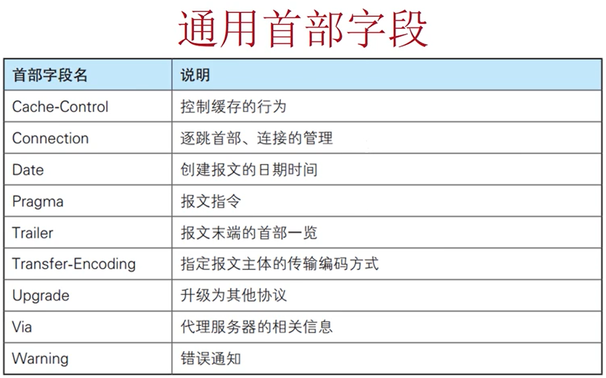

来自之前cnblog的博客
源地址：https://www.cnblogs.com/This-is-Y/p/12256079.html
**报文： **
http请求报文：
基本格式

请求行：这里那有道翻译的网页用一下（应该没啥关系吧）
请求行由3部分组成，请求方法，请求URL，HTTP协议版本。
方法：最常见的有GET，POST，请求方法一定是要大写
HTTP/1.0和HTTP/1.1支持的方法：
但因为安全隐患等原因，用的最多的还是POST和GET，关于POST和GET：https://www.cnblogs.com/This-is-Y/p/12244175.html
URL：URI（Uniform Resource Identifier）：统一资源标识符
URL（Uniform Resource Locator）：统一资源定位符
URL是URI的子集，URL是一种具体的URI。
较为经典的URI
协议有http，https，ftp 等
登陆认证信息一般出现得较少
协议版本：最初的版本HTTP/0.9，然后是HTTP/1.0，再之后是将持久连接改为默认的HTTP/1.1，这是最主流的HTTP协议版本。再到现在的的HTTP/2.0，这个用的不多。
http响应报文：
基本格式
响应码： 有2xx，3xx，4xx，5xx这几大类，其中1xx表示信息性状态码，接受的请求正在处理。2xx表示成功，请求正常处理完毕。3xx多表示重定向，需要进行附加操作完成请求。4xx多表示失败（客户端），服务器无法处理请求。5xx同样表示失败（服务端），服务器处理请求出错。
1xx：有100 Continue，表示继续。101 Switching Protocol，切换协议。1xx响应码很少见，
2xx：最常见的是200 OK，表示请求正常处理。 204 No Content 没有内容，一般在需要客户端发送信息而服务端不需要返回新信息内容时出现（一般在一个网页按F5刷新，看似什么都没有发生，实际上浏览器发送了请求，而此时响应码就是204）。 206 Partial Content 请求并发送部分内容，一般出现在发送内容过大时，在首部字段中使用range头对文件进行分块发送（当浏览一些较大的图片，PDF时会出现）
3xx：301 Moved Permanently 永久移动，即重定向，当前全球的资源分配了新的URI（可以在首部字段中找到Location字段找到新的URI）。302 Found 临时移动 ，在防火墙认证时经常用到。与302一起出现的还有 303 See Other 查看其他位置 ，在302跳转认证成功了，就会出现303 see other，这个表示由于请求对应的资源存在另一个URI，应使用GET方法定向获取请求的资源（303状态码明确表示用户应该使用GET方法获取资源。）304 Not Modified 未修改，告诉客户端,所请求的内容距离上次访问并没有变化. 客户端可以直接从浏览器缓存里获取该资源（304是3xx里面和重定向没关系的一个）。307 Temporary Redirect 临时重定向 ，和302类似，但307更为严谨，不会从POST变成GET，302尽管禁止POST变换成GET，但是大多数人并不遵守。关于重定向，还有一个META Redirect，只需要在html的head里写上<meta http-equiv=”refresh” content=”5;URL=新的URL”> content里面的5代表延迟时间5s，这样操作返回的响应码是200 OK
4xx：400 Bad Request 错误请求，发送的URL有错误，比如无法正确转码什么的。401 Unauthorized 未认证，在打开一个网页时弹出窗口需要你认证身份。403 Forbidden 禁止访问 ,权限不足，无法访问请求的文件。404 Not Found 喜闻乐见的一个状态码，这个不需要多说了，访问文件不存在。
5xx：500 Internal Server Error 内部服务器错误，一般是阿帕奇服务器出现问题。503 Service Unavailable 服务不可用，服务器出现超负载或者正在停机维护。
这里我只说一小部分响应码，响应码总结大全：https://www.cnblogs.com/isykw/p/6115469.html 。
首部字段细分：
通用首部字段：在请求报文和响应报文中都可能出现
请求首部字段：只在请求报文中出现
响应首部字段：只在响应报文中出现
实体首部字段：和实际传输数据相关的参数。
其他
通用首部字段：
Cache-Control：缓存控制，是否使用缓存
Connection：持久连接，后文有详细提到，有Keep-Alive ，close等值
Keep-Alive：控制连接断开条件，timeout（超时时间），max请求次数极大值
Date：HTTP报文产生日期
Transfer-Encoding：传输报文主体采用的编码方式，chunked（分段式编码）
Upgrade：检测协议或是否可以使用更高版本协议进行通信（不太懂）
Warning：警告。[警告码][警告主机：端口号][警告内容]（[警告时间]（可省略））
请求首部字段：
Accept：告知服务器用户代理能够处理的媒体类型及媒体类型的相对优先级 ，如text/plain;q=0.3,text/htm;q=0.4, 不同的文件类型用 ‘ , ‘ 分隔，q的值未权重，0~1，可精确到小数点后3位，默认值位1.0。服务器提供多种内容时，优先返回权重值高的媒体类型。
文本文件：text/html，text/plain，text/css……
application/xml，application/xhtml+xml……
图片文件：image/jpeg，image/gif，image/png……
视频文件：video/mpeg，video/quicktime……
应用程序使用的二进制文件：application/octet-stream，application/zip……
Accept-Charset：可接受的字符集，像utf-8等。同样有优先级
Accept-Encoding：告知服务器用户代理支持的内容编码以及内容编码的优先级，gzip，deflate等
gzip：由文件压缩程序gzip（GNU zip）生成的编码格式（RFC1952）
compress：由UNIX压缩程序compress生成的编码格式
deflate：组合使用zlib格式（RFC1950）及由deflate压缩算法（RFC951）生成的编码格式
identity：不执行亚索或不会变化的默认编码格式
Accept-Language：告知服务器用户代理能够处理的自然语言集（指中文或英文等），如zh/cn,zh;q=0.9,en-us;q=0.6，同样有优先级
Authorization：告知服务器用户的认证信息（证书值），出现401响应码时会出现这个字段
Host：告知服务器请求的资源所处的互联网主机名和端口号，Host是HTTP/1.1规范内唯一一个必须被包含在请求内的首部字段。Host和以单台服务器分配多个域名的虚拟主机的工作机制有密切的关系
Referer：告知服务器请求的原始资源的URI。相当于告诉服务器我是从哪里过来的，可用于防止盗链，同时有一定安全隐患。Referer的中文意思是推荐人。
User-Agent：发送创建请求的浏览器，系统，IP和用户代理名称等信息给服务器，检查User-Agent是一种最简单的反爬手段，与之对应的可以通过fake-useragent库来反反爬。同时也可以使用burpsuite来修改User-Agent。
响应首部字段：
** **
Location：出现重定向时，告知客户端新的URL
Server：告知客户端当前服务器上安装的HTTP服务器应用程序的信息，有安全隐患，会暴露apache服务器，openssl，PHP的版本和操作系统等信息。可通过以下方法解决

WWW-Authorizate：和401有关，告知客户端需要做认证
实体首部字段：
**  **
**
Content-Length：实体主体部分的大小（以字节为单位）
Content-Type：表示报文主体对象类型，常见的是text/html
Allow：用于通知客户端获取指定资源可使用的所有HTTP方法，当接收到不支持的方法时，会返回405 Method Not Allowed。同时，还会把所有能支持的HTTP方法写入Allow字段后返回
Content-Encoding：告知客户端服务器对实体的主体部分的编码方式（如gzip等）
Content-Language：告知客户端服务器发送的实体主体使用的自然语言
Content-Location：表示报文主题返回资源对应的URI。比如访问一个英文页面，但是请求Accept-Language要求的是中文，就返回一个中文页面给客户端，返回的这个中文页面的URL，就在Content-Location字段里（暂时没找到合适的例子，找到了，我记得的话就补充一下）
Content-Type：说明了实体主体内对象的媒体类型，和Accept一样，用type/subtype的形式赋值。防火墙限制下载部分类型文件，就是从这里找数据
Expires：缓存的存活时间
其他：
** **为cookie服务的字段：
set-cookie：参数（值，存活时间（expires），路径（path），域名（domain），（secure），（HttpOnly））
值：就是cookie的值。
expires：cookis可以使用多长时间
domain：假如设置域名为 .thisisy.com 那么该cookie可以发给www.thisisy.com,也可以发给mail.thisisy.com等等，存在安全隐患，建议不要设置
path：和域名原理一样，也是建议不要设置（关于path和domain的详解，看这里：https://www.jb51.net/article/44561.htm）
secure：设置该参数，则该cookie只能在建立HTTPS的安全连接下才可以发送cookie
HttpOnly：使js脚本无法获得cookie，主要用于防止xss攻击对cookie的窃取
同样，首部字段与主体之间要留有空行，主体就是网页html源码
http是不保存状态的协议，即无状态协议，http协议不对请求和响应之间的通信状态做保存，也就是说，在http这个级别，协议对于已经发送过的请求或响应都不做持久化处理。只是为了更快的处理大量事物，确保协议的可伸缩性，而特意把http协议设计得如此简单。而有些时候需要对请求或响应做保存，这时候就出现了隐含参数和cookie
哑服务：
关于http协议的瞬时性，原始版本http都是建立建立，发送请求，接受响应，连接断开。这样一个过程。但是这个过程在大型网页中非常消耗资源（大量资源都用在了建立三次握手上）。

后来提出了持久连接，只要任意一端没有提出断开连接，连接就会一直存在。在http/1.0中，默认关闭，需要在http头中加入”Connection:Keep-Alive”开启持久连接，在http/1.1中，持久连接变成默认开启，在http头中加入”Connection:close”才会关闭。于是整个过程就变成了建立连接，发送请求，接受响应，发送请求，接受响应…………直到断开连接，就像一个人坐一趟列车在两个地方来回走，必须到达A城才可以去B城，到了B城才能再回A城，
但是人们发现这样还不够快，于是出现了管道化，在前面持久连接的基础上，发送一次请求后，不等接受响应，直接发送第二个请求，就像两根管子，分别处理发送的请求与接受的响应

cookie：
** **Cookie是一段不超过4KB的小型文本数据，由一个名称（Name）、一个值（Value）和其它几个用于控制Cookie有效期、安全性、使用范围的可选属性组成。
由于HTTP是一种无状态的协议，服务器单从网络连接上无从知道客户身份。怎么办呢？就给客户端们颁发一个通行证吧，每人一个，无论谁访问都必须携带自己通行证。这样服务器就能从通行证上确认客户身份了。这就是Cookie的工作原理。（如果盗取了别人的cookie，就可以用别人的身份登陆一些网站，当然，有些网站还会有别的认证方式，但这种安全隐患还是值得注意）
（图片来源：乾颐堂）